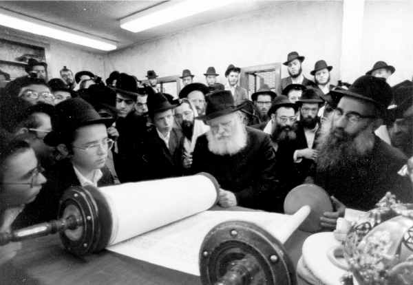

Just as It Was in Lubavitch
All the rabbanim – morei tzedek, who were unable to leave their communities for Pesach and Sukkos because of the numerous questions that came up regarding these holidays, went to Lubavitch for Shavuos. * A compilation of sichos about the practice of Chabad rabbanim to go to Beis Chayeinu for Shavuos.

IN LUBAVITCH, SHAVUOS WAS CALLED “CHAG HAMATZOS”
Shavuos used to be called “Chag HaMatzos” (a play on the name given to Pesach; in this case, it is an abbreviation for morei tzedek) in Lubavitch. All the rabbanim – morei tzedek, who were unable to leave their communities for Pesach and Sukkos because of the numerous questions that came up regarding these holidays, went to Lubavitch for Shavuos (which has no special laws). I will give a bottle of mashke from this farbrengen (the conclusion of the Yemei Tashlumin of Z’man Mattan Toraseinu and Moadim L’Simcha) to these rabbanim, those who did not get at the previous farbrengen.
Since so many rabbanim came, bli ayin ha’ra, and there is not enough mashke, I will give to the rabbanim going to Eretz Yisroel, from whose essence the entire world drinks, so that when they arrive in the Holy Land they will divide the entire country between them so that each place will get a bit of mashke (at least) from here. [This being] the place of Nasi Doreinu, who for ten years of his life in this world was involved in Torah and t’filla in this place, who increased Torah and increased t’filla, in a way of “moistening so that it can moisten others,” and in the wording of Nigleh – a peula nimsheches (ongoing activity) until the end of all generations.
(Sicha night of 12 Sivan 5744)
A SPECIAL POWER IN ALL TORAH MATTERS
Shavuos was called in Lubavitch (in a humorous vein) the Chag HaMatzos since that is when the rabbanim – the morei tzedek came to celebrate Yom Tov with the Rebbe [Rashab], and then his successor, the Rebbe my father-in-law. Probably this was the practice even earlier by the Rebbe Maharash and the Tzemach Tzedek.
… Based on this we understand the connection between “Chag HaMatzos” - the rabbanim, morei tzedek, with the Z’man Mattan Toraseinu, when the Jewish people received the Torah anew (as we say in the Torah blessings every day and even more so in “the time of the giving of our Torah,” nosein ha’Torah in the present tense), and the Jewish people in general and rabbanim in particular receive the power to be morei tzedek, to instruct and give instructions and righteous judgments in Torah, tzedek with all its meanings: justice, righteousness, chesed – going beyond the letter of the law.
The rabbanim receive additional strength by coming for Z’man Mattan Toraseinu, Chag HaMatzos, to Lubavitch to their Rebbe and in this case – the place (the shul and beis midrash and place of good deeds) of the Rebbe, my father-in-law, Nasi Doreinu where he did his holy work for the last ten years of his life in this world. Holiness does not depart from its place; on the contrary, it increases with the work in the activities of the Rebbe, my father-in-law, Nasi Doreinu, through his students and students’ students.
[This additional strength is received] by celebrating Z’man Mattan Toraseinu in “Lubavitch,” in the four cubits of the place from where Torah and the wellsprings are spread outward, where the teachings of our Rebbeim are learned and reviewed, especially the teachings of Chassidus, this provides additional strength in all matters of Torah. Including and especially the idea of “moreh tzedek,” tzedek in a manner of the trait of Chassidus [piety] (beyond the letter of the law), being based upon and permeated with the teachings and guidance of our Rebbeim in the teachings of Chassidus, the luminary of Torah.
This has a special relevance with the fact that through spreading the wellsprings outward that is when Moshiach will come, Moshiach being a “moreh tzedek” (as in his title: Moshiach Tzidkeinu) as it says (Yirmiyahu 23), “and he will judge with tzedek etc. and tzedek will gird his loins,” “and I will establish for Dovid a righteous shoot (tzemach tzaddik) etc. and he shall perform judgment and righteousness in the land … and this is his name that he shall be called, Hashem is our righteousness (Tzidkeinu).”
Therefore, it is most proper that the rabbanim, morei tzedek who are here for Shavuos, make a gathering and discuss timely issues, as mentioned earlier. In general, to be morei tzedek that are worthy of that title, and to teach the Jewish people the ways of righteousness, until they accomplish that every Jew be a moreh tzedek in his personal life and conduct. There is a special conferring of strength for this because of the time, Z’man Mattan Toraseinu, and place, the four cubits of the Rebbe, my father-in-law, Nasi Doreinu.
In order to add more to all this and to connect the decisions regarding this with something physical, it would be worthwhile for all the rabbanim here at the farbrengen to say l’chaim on wine which makes one rejoice, and with a commotion, together with a joyous tune, and they should have them join all those who received smicha for rabbanus or those worthy of receiving smicha.
(Sicha of the second day of Shavuos 5750)
THEY SHOULD GATHER AND CONSULT ONE ANOTHER
It is known that in Lubavitch, they called Shavuos (in a humorous vein) Chag HaMatzos because the rabbanim (morei tzedek) who could not leave their communities for Pesach or Sukkos (due to the many halachic questions) would come for Shavuos (when there are no particular questions).
Although it is not possible to compare to the “capital city” of Lubavitch, today too, we try to do as in Lubavitch, especially when in the four cubits of the Rebbe, my father-in-law, Nasi Doreinu, his only son and the successor of the Rebbe [Rashab]. Wherever he went to exile, the Sh’china was with him and in this case, it went into exile with him to Lubavitch here.
Practically speaking, action is the main thing: Since rabbanim and morei tzedek are here from a number of communities, especially Chassidishe rabbanim and morei tzedek, whose halachic decisions are based on the piskei din of the Alter Rebbe, the Mitteler Rebbe, and the Tzemach Tzedek, and in general, piskei dinim also in accordance with the trait of Chassidus (piety), beyond the letter of the law, which nowadays have become in the category of “the letter of the law” -
It would be proper if they got together and conferred about how to increase in all matters having to do with their activities as rabbanim and halachic jurists amongst the Jewish people, as it relates to their personal activities to increase greatly in spreading Torah and Judaism in their city and neighborhood etc. and also to inspire and encourage all the rest of the rabbanim and morei horaa everywhere to also increase in spreading Torah and Judaism everywhere.
Obviously, the intention in all this is also for the rebbetzins whose job it is to help their husbands, the rabbanim and morei horaa, by taking an important part in the work of spreading Torah and Judaism among Jewish women, foremost – regarding the three mitzvos particular to Jewish women, lighting Shabbos and Yom Tov candles, kashrus of food and drink, and family purity, and regarding chinuch of children - “educate a child etc. even when he grows older he won’t veer from it” - an essential part of this is given to the woman.
I strongly hope that when they will be involved with this properly, certainly the activities will be with great and outstanding success, in a way of “when you raise up the lights” (as we will be reading in the Torah, Mincha time) “until the flame goes up of its own accord” -
… In order to connect the talk and inspiration and the commitment in this to something physical, which will add to the actual carrying out of the commitment (as it is explained in the Drashos HaRan), especially when this is an auspicious time, the Shabbos following Mattan Torah, and an auspicious place, a holy place, the shul and beis midrash … and especially within the four cubits of the Rebbe, my father-in-law, Nasi Doreinu;
The rabbanim and morei horaa who are here will say l’chaim over physical wine and after Shabbos, they will get a bottle of mashke in order to hold farbrengens, in which they will agitate about everything spoken about before, foremost – in the place where they serve as rabbanim, and likewise regarding other places – by farbrenging and talking with rabbanim in every location about how to increase in all matters of Torah and Judaism with Ahavas Yisroel and Jewish unity.
Yehi ratzon that these activities further hasten the true and complete Geula through Moshiach Tzidkeinu when, “with our youth and our elders etc. with our sons and our daughters,” “a large congregation – will return here,” to our holy land, together with all the shuls and battei midrash, “in the future the shuls and battei midrash in Bavel will be established in Eretz Yisroel,” to Yerushalayim the holy city, to the Beis HaMikdash.
(Sicha Parshas Naso 14 Sivan 5746)
Beis Moshiach (staff). "Just as It Was in Lubavitch." Beis Moshiach, no. 928 (May 29, 2014).